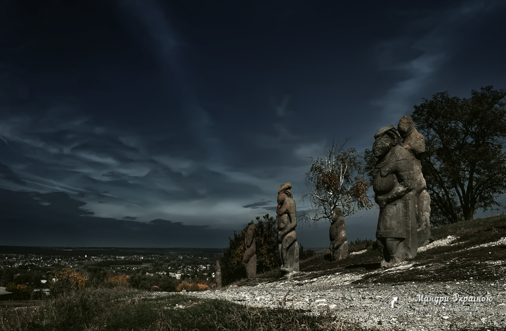

Работа сделана студеном: Шаравин Даниил Владимирович
Работа выполнена с помощью редактора кода Sublime Text 3 , при верстке сайта использовались html, css, js языки
Таблица предметов с оценкой ,и имена преподавателей
| # |
Дисцыплина |
Е\З |
Нац |
Бал |
ECTS |
| 1 |
Архітектура обчислювальних систем
Ломакін О. М. [ДММ] |
Е
P |
Информация в обработке |
Информация в обработке |
Информация в обработке |
| 2 |
Дискретна математика. Ч.2
Татарінова О. А. [КМПС] |
Е
P |
Информация в обработке |
Информация в обработке |
Информация в обработке |
| 3 |
Математичні методи моделювання
Чистіліна Г. В. [КМПС] |
Е
P |
Информация в обработке |
Информация в обработке |
Информация в обработке |
| 4 |
Об'єктно-орієнтоване програмування
Пащенко С. О. [КМПС] |
Е
КP |
Информация в обработке |
Информация в обработке |
Информация в обработке |
| 5 |
Технології програмування
Чистіліна Га.Ві. [КМПС] |
Е
P |
Информация в обработке |
Информация в обработке |
Информация в обработке |
| 6 |
Іноземна мова
Мартинчук О. О. [ІМ] |
З
- |
Информация в обработке |
Информация в обработке |
Информация в обработке |
| 7 |
Правознавство
Сємко М. О. [П] |
З
РЕ |
Информация в обработке |
Информация в обработке |
Информация в обработке |
| 8 |
Фізичне виховання
Ширяєва С. В. [ФВ] |
З
- |
Информация в обработке |
Информация в обработке |
Информация в обработке |
1 / 5

Назад в Будущее
2 / 5

Первому игроку Приготовится
❮
❯
Cлова которыми меня можно описать
- Реалист
- Любитель книг
- Ленивый

Любимая цитата:
Ну почему Свет действует через ложь, а Тьма – через правду? Почему наша правда оказывается беспомощной, тогда как ложь – действенной? И почему Тьма прекрасно обходится правдой, чтобы творить Зло? В чьей это природе – в человеческой или нашей?
Цитата из хорошей книги "Ночной дозор" в жанре городское фентези написана в 1998 году русским писателем Сергеем Лукьяненко
Самое интерестное в моем городе это гора ...

Кременец (высота составляет 218м над уровнем моря) на южной окраине Изюма является меловым останцем с обнажениями верхнемеловых и юрских слоев, а так же многочисленными следами растительного и животного мира тех периодов в карстовых воронках, что делает гору помимо прочих военных заслуг одним из самобытных памятников природы Украины.
Южный склон горы Кременец в Изюме Южный склон Кременца
Уникальное месторасположение кургана, обеспечившее ему фортификационную роль наблюдательного пункта, позволяет с вершины практически охватить огромный горизонт дивной слобожанской природы с Букинским и Изюмским лесами, Святыми Горами (в ясную погоду можно увидеть даже знаменитый монастырь), голубыми водами Северского Донца и весь город у подножья. Его растительность составляют типичные представители степной зоны: ковыль, эфедра, типчак.
Изюмская гора Кременец
История
Западный склон изюмской горы Кременец Западный склон горы Кременец в Изюме
Конечно же ее история началась за долго до появления на земле человека, когда планета лишь начинала свой путь в распаленной магме вулканов и страшном реве сталкивающихся тектонических плит. Но с приходом на Евразийский континент человека разумного удобная переправа через реку, позднее получившую имя Донец, стала довольно оживленным местом на этой планете. Тем более, что рядом природа сотворила видимый за многие километры ориентир — гору Кременец.
Именно тогда здесь начали писаться хроники изюмской земли местами стоянок древних кочевников и забытыми артефактами одиноких странников. Только по оценкам уже обнаруженных следов археологи официально заявляют о принадлежности их пяти различным временным периодам. А сколько еще тайн хранит эта земля…
Центральная аллея мемориального комплекса Кременца Центральная аллея Кременца
Письменные же источники впервые упоминают шлях от приметного кургана в петле Донца на официальной границе Киевской Руси в контексте остановки войск князя Игоря (878 — 945) во время его восточного похода и противостояния между русскими князьями и половецкими ханами в XI — XII столетиях.
Современная же история горы восходит к XIV столетию, когда Кременец стал одним из форпостов татар на северных окраинах Дикого Поля с появлением на его вершине дозорно-оборонительное укрепление «Гезун-кермен», которое служило им базой для набегов на прилегающие земли. Город-крепость существовал до тех пор, пока границу интересов кочевников и московитов разделял Донец.
Когда же руками бежавших от полькой тирании украинцев царская власть отодвинула рубежи татарского влияния на юг к Таврии, ранее располагавшийся лишь на левом берегу реки город Изюм с легкой руки Харьковского полковника Григория Донца ( – 1693) перешагнул водную преграду в 1681 году и занял утраченные крымчаками позиции, углубив вырытый ими у подножья Длинной горы (Изюм-курган) ров, увеличив высоту каменных стен и огородив периметр острыми палями.
Аллея скифских баб на изюмской горе Кременец Аллея скифских баб на горе Кременец
С тех пор Кременец стал одним из ключевых слобожанских опорных пунктов, хотя с упрочнением московского господствования на этих землях при снижении татарской агрессии постепенно к концу XVIII столетия его роль ограничилась наблюдательным пунктом, а жилые кварталы спустились со склонов в опоясанную рекой долину.
Гора на южных подступах Изюма в виду подавляющего доминирования над прилегающими просторами еще не раз будет призвана в строй очередной развязанной Москвой войны сначала под бело-сине-красным, а потом кумачовым флагом. Последний свой бой курган примет 17 июля 1943 года, когда во время Второй мировой советские части ценой огромных потерь, в том числе командующего операцией генерал-лейтенанта Петра Васильевича Волоха (1896 — 1943), вырвут свободу от немецких захватчиков для изюмской земли.
Всем воинам во все времена защищавшим на этой высоте свободу родной земли от любых агрессоров посвящен созданный на Кременце в 1988 году мемориальный комплекс. И хотя центральную часть горы пронизывают мотивы-напоминания о ее последней войне, по ее западному склону протянулась аллея скифских и половецких каменных изваяний, которые являются символом начала истории этой земли и первых сражений ее за свободу и независимость. Так что сейчас это курган памяти всех предков, благодаря которым Украина живет и здравствует доныне.